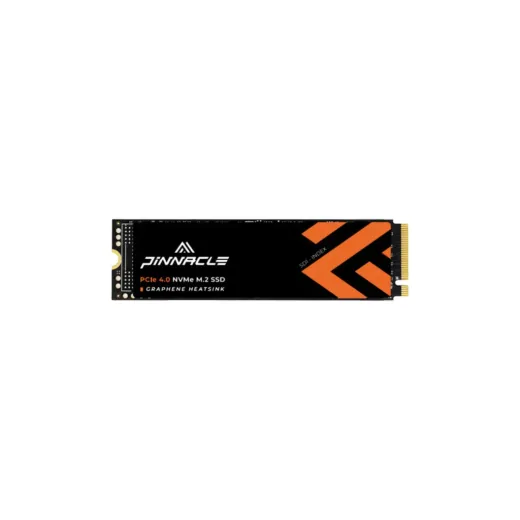
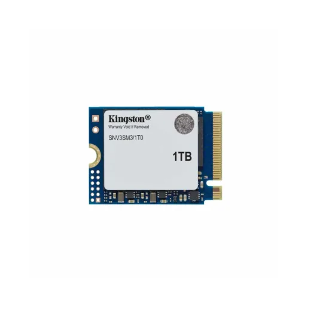
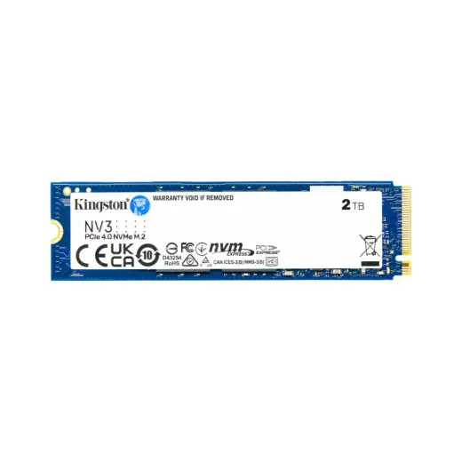

Inicio › Memorias USB, SSD y discos › SSD
Memorias USB, SSD y discos SSD en Honduras: precios comparados
12 productos SSD en 1 tiendas (Sycom). Desde L 2,185.
 SSD 2.5" Sata 256GB Patriot P210S256G25 N/DL 2,185En Sycom
SSD 2.5" Sata 256GB Patriot P210S256G25 N/DL 2,185En Sycom SSD 2.5" Sata 512GB Timetec SD03 30TT25SATA-512G B N/DL 2,750En Sycom
SSD 2.5" Sata 512GB Timetec SD03 30TT25SATA-512G B N/DL 2,750En Sycom SSD M.2 2230 Timetec MS60S Gen4x4 · 512GB · 35TT2230GEN4SG-512GL 4,025En Sycom
SSD M.2 2230 Timetec MS60S Gen4x4 · 512GB · 35TT2230GEN4SG-512GL 4,025En Sycom SSD M.2 2280 500GB Kingston Nvme Pcie Snv3S/500GL 4,250En Sycom
SSD M.2 2280 500GB Kingston Nvme Pcie Snv3S/500GL 4,250En Sycom SSD 2.5" Sata 1TB Timetec SD04 30TT25SATA-1TB N/DL 5,000En Sycom
SSD 2.5" Sata 1TB Timetec SD04 30TT25SATA-1TB N/DL 5,000En Sycom SSD 2.5" SATA 960GB Kingston SA400S37/960GL 5,200En Sycom
SSD 2.5" SATA 960GB Kingston SA400S37/960GL 5,200En Sycom SSD Externo M.2 1TB Kingston NVME PCIE SXS1000/1000GL 5,495En Sycom
SSD Externo M.2 1TB Kingston NVME PCIE SXS1000/1000GL 5,495En Sycom SSD M.2 2230 500GB Kingston NV3 SNV3SM3/500GL 5,750En Sycom
SSD M.2 2230 500GB Kingston NV3 SNV3SM3/500GL 5,750En Sycom SSD M.2 2280 1TB Kingston Nvme Pcie Snv3S/1000GL 6,325En Sycom
SSD M.2 2280 1TB Kingston Nvme Pcie Snv3S/1000GL 6,325En Sycom
SSD M.2 2280 1TB Gen 4 Timetec/Pinnacle 35TT2280GEN4PG-1TBL 6,900En Sycom
SSD M.2 2230 1TB Kingston NV3 SNV3SM3/1T0L 9,200En Sycom
SSD M.2 2280 2TB Kingston Nvme Pcie Snv3S/2000GL 11,000En Sycom
Preguntas frecuentes
¿Dónde están más baratos los memorias usb, ssd y discos SSD en Honduras?
Revisa cada producto: mostramos el precio en cada tienda.